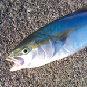

Pythonのまなびかた
Masashi Shibata @c_bata_
Python 入門者の集い #3
2016/08/31 (水)
自己紹介

- 芝田 将
- Twitter: @c_bata_ , Github: @c-bata
- 明石高専 (一応、関西在住)
- Python歴は3年くらい
- PyCon JP 2015, 2016スタッフ
- スマートフォンのセキュリティに関する研究
- カレーメシ先輩って呼ばれてます
今日話すこと
- @takanory「自分はこういう風にPythonやってきたよっていうのを話してきて」
- 技術的に難しい話はしないので、気楽に :)
- ぼくのこれまでやってきたことと、その中で大事だなと感じた 「アウトプット」「コミュニティ活動」 の話
c-bata のこれまで
実際にはじめたこと
当時のブログ記事によると
- 基本的なPythonの文法とか、調べたことをまとめただけ
- Raspberry Pi + Arduinoでエアコンの遠隔制御
- Flask / SQLAlchemyを使ってWebアプリの開発
反響が出だした
続けてたらブログのアクセス数が増えていった
たまにはてブのつくエントリが出てきた
- 2年前に書いた「Pythonでつくる検索エンジン」がバズった
-
Twitterのフォロワーが増えだした
BeProudでアルバイト
そろそろアルバイトとかも出来るんじゃないかな...
当時読んでいた本の著者の多くがBePROUDって会社にいるらしい。
春休みに飛び込んでアルバイト
1ヶ月の新宿ホテル生活でお金がみるみるとんでいった
色んな勉強会に参加
- 春休みを使って色んなPythonの勉強会に参加
- 色んな知り合いができて、勉強会の参加も緊張しなくなってきた
- PyCon JP 2015のスタッフも始めた
PyCon APAC/Taiwan, PyCon JPでLT
aodagさん「今年はどこのPyConに行くんだい？」
BeProudのすごい人達と関わりが出来てきて、自分のやってることってそんなにしょぼいものばかりではないんじゃないかなって自信がついてきた。
研究のために使ってたpandasのvalidationライブラリを公開・PyCon JP 2015でLT発表。
PyConへのイメージが結構変わる
最近
- PyCon APAC 2016 in Korea で、自分のつくったフレームワークを紹介
- 今朝、gihyo.jp 参加レポート第2回が公開されました
Flaskで受託開発、Djangoでサービス開発
- 気になるライブラリをウォッチ。(Django REST FrameworkとかSwaggerまわり)
-
大事だなと思ったこと
大事だなと思ったこと
Pythonの勉強に大事だったなと思うことが2つ
アウトプット
- ブログを書く
-
- Pythonを使ってなにかやってみる。公開する
- Webアプリ
- Pythonのライブラリ
- 実際のデータを使って何か出してみる
勉強会やカンファレンスで話す
技術レベル ≠ 需要
- 最初の頃「自分の勉強してる基本的な知識なんて全然需要ないよなぁ...」
-
- 公開せずにローカルに置いてたメモは必ずどっかいく
- 無くなったら記憶もどっかいく
- 自分はRubyとかPHPをやってたことがあるらしい...
ブログは勉強し始めほど書いてみる。
ボクの場合、いまだにこれまでで一番伸びた記事は2年前のもの
コミュニティ活動
メリット
- 何か始めるときの敷居がどんどん下がっていく
-
- 自分だけでは無理だった機会が訪れる
- gihyo.jp での連載
- Python入門者の集い #3
コミュニティ活動とは？
コミュニティって言葉が漠然としていて、分かりづらいかも。何でもいい。
知り合いを増やす。
githubとかtwitterみたいなSNS
勉強会・PyCon JP
- ここはみなさんもう始めてる
-
まとめ
- アウトプットをしよう
-
- コミュニティ活動しよう
- Pythonistaとつながろう (懇親会 🍻 )
- PyCon JP 2016行く方はよろしくお願いします :)
懇親会よろしくお願いします 🍻
Use the left and right arrow keys or click the left and right
edges of the page to navigate between slides.
(Press 'H' or navigate to hide this message.)
{kind=link}